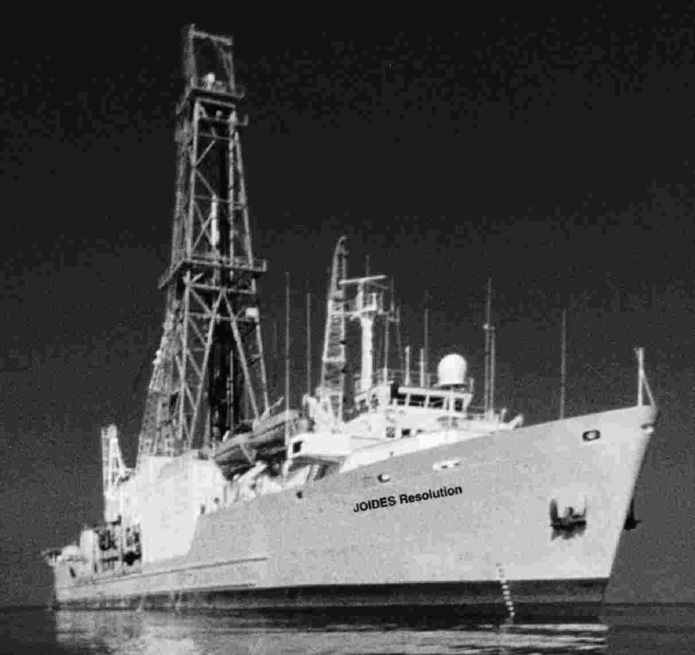
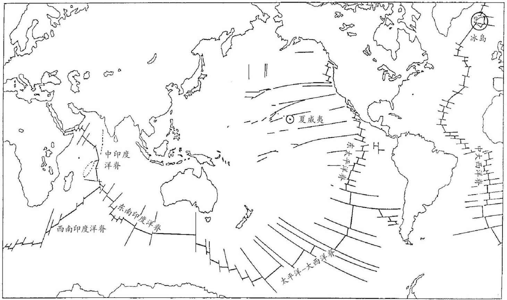
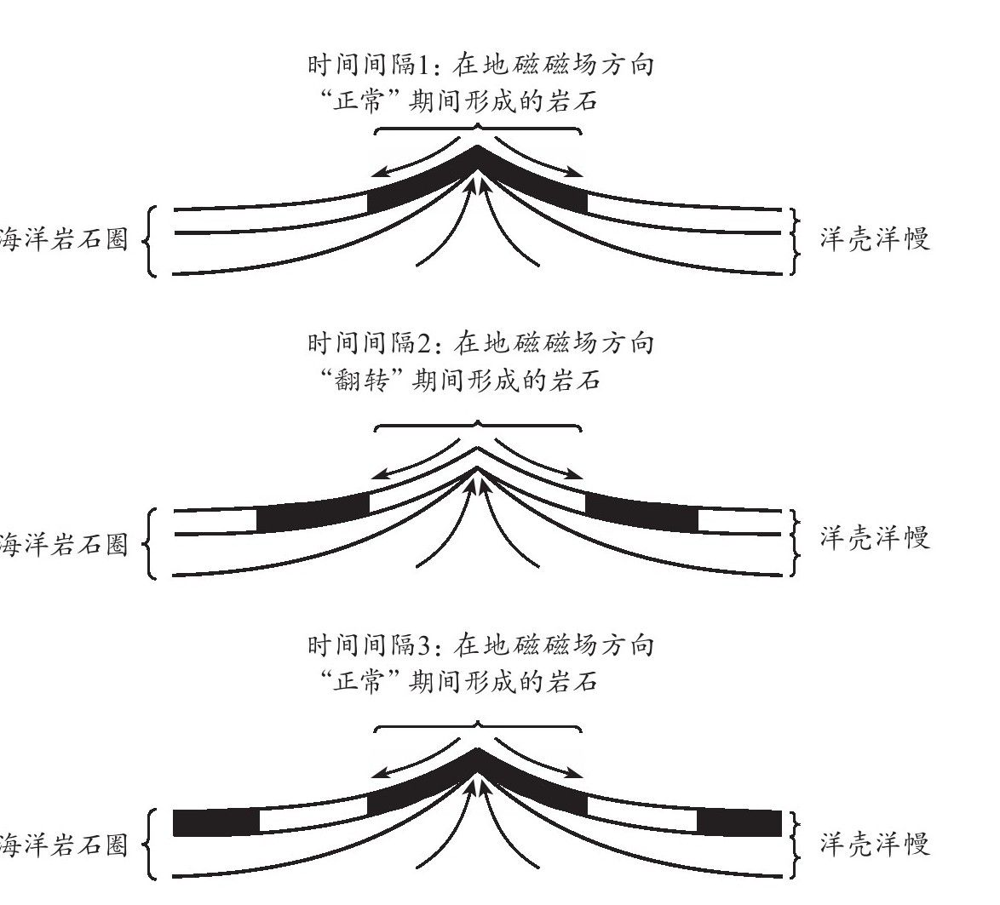
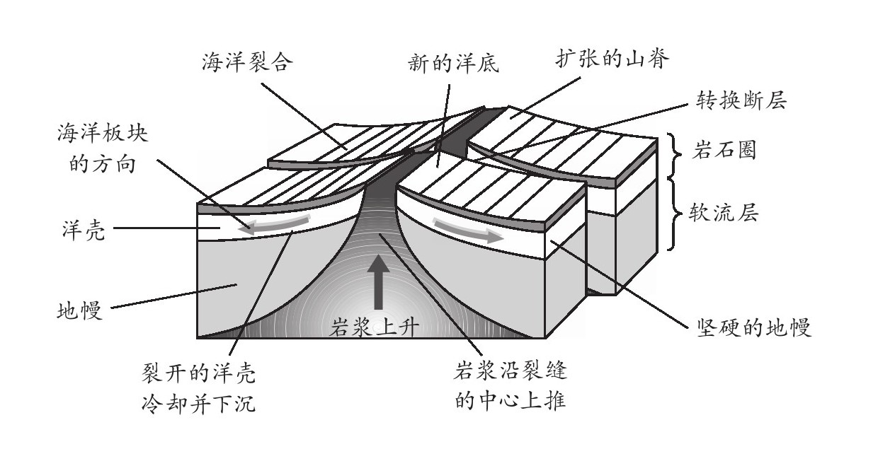
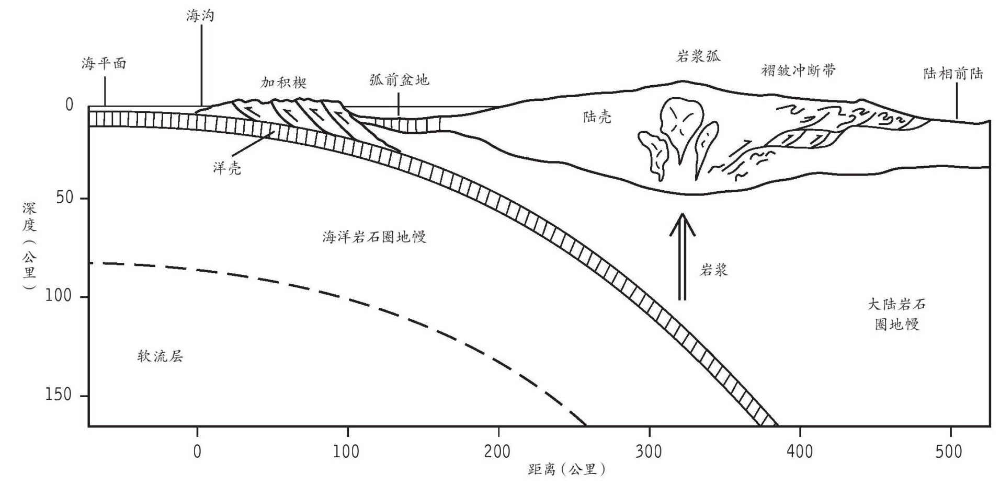

在我们这个星球上，71%的表面积被水覆盖，其中只有1%是淡水，2%是冰，余下的97%都是海洋中的盐水。水体的平均深度是4000米，最深处可达11000米。水面上露出的只是冰山一角。在深度超过50米，也就是所谓的透光带之下，阳光就很难穿透了。其下方是一个冰冷黑暗的世界，与我们的世界截然不同——至少在大约130年前的确如此。
1872年，英国皇家海军“挑战者”号启航，开始了海洋探索的首次科学远航。这艘船遍访了所有大洋，在四年中航行十万公里，但其航行的深度却只能通过在船侧放下一个砝码进行单点测量。因此，在第二次世界大战期间声呐和沉积物取芯等技术取得发展之前，海洋学进步的步伐还十分缓慢。冷战期间，西方诸国需要优质的海床地图，以便隐蔽自己的潜水艇，还需要先进的声呐和水下测声仪矩阵来侦测苏联的潜水艇。如今，船只安装和拖曳的声呐扫描仪已为大部分海床绘制了相当详细的地图。在很多地区，大洋钻探计划已经获得了其下岩石的样本，深水载人潜艇和潜水机器人也已经造访了很多有趣的处所，但亟待探索的空间仍然很大。
地球最初的大气层看来可能被初生太阳的太阳风刮走了大半。我们几乎可以肯定，促成地球最终形成的大爆炸以及产生了月球的大撞击此二者所产生的热量，必定熔融了地表的岩石，蒸发了大半原始水体。那么，如今我们看到的广阔大洋是从哪里来的？40亿年前最古老的岩石里埋藏着线索，它们在形成之时被液态水环绕着，水生细菌出现后不久也提供了有关的证据。印度在距今30亿年前的沉淀物中发现了最古老的雨滴化石印记。某些地表水可能是以火山气体的形式从地球内部逸出的，但大多数或许来自太空。时至今日，每年仍有大约三万吨水从遥远的外太空随着彗星粒子的细雨落向地球。在太阳系初期，水流量一定明显高得多，后来的很多撞击也可能是由整个彗星或其碎片所造成的，其组成被比拟为脏雪球，其中包含着大量的水冰。
如今，按重量计算，海水中大约有2.9%是溶解的盐类，其中大部分是食盐，即氯化钠；但也含有镁、钾、钙的硫酸盐、重碳酸盐和氯化物，此外还有些微量元素。海水中的盐度各不相同，取决于蒸发率及淡水的流入。因此，比方说，波罗的海的盐度较低，而被陆地包围的死海，其盐度大约是平均值（即每千克海水含35克固态盐）的6倍。但盐度中每种主要成分的相对比例在全世界范围内是一致的。
海洋并非一直这样咸。大部分盐类据信来自陆地上的岩石。一些盐类只是被雨水和河流溶解，而另一些则是由化学风化作用释放的，在风化过程中，溶解在雨水中的二氧化碳生成了弱性的碳酸。这种物质将岩石里的硅酸盐矿物缓慢地转变成黏土矿物。这些过程往往会保留钾而释放钠，这就是为什么氯化钠成为海盐中的最大组分。近数亿年来，海洋盐度大致稳定，风化作用与蒸发岩矿床和其他沉淀物的沉积作用二者所输入的盐分大致达到了平衡。
海洋中还有很多微量化学物质，其中很多是对生命非常重要的养分，因而对于海洋生产力也至关重要。因此，它们往往在地表水体中便消耗了。将航行在太空中的彩色图像扫描器调试成对浮游植物的叶绿素等色素的特征波长敏感，即可绘制出海洋中季节性繁殖带的地图。最高的生产力往往发生在中高纬度地区的春季，在那里，温水与营养丰富的冷水相遇。1980年代，加州莫斯兰丁海洋实验室的约翰·马丁注意到，浮游生物的大量繁殖可能会在火山型洋岛周围造成下降流。他认为，铁或许是限制海洋生产力的一种养分，而火山岩会提供微量的溶解铁。从那以后，科学家们把小块的铁盐放置在南太平洋中，又观测了冰川期开始时海洋生产力最高地区的沉积岩芯，当时风吹来的尘埃为海洋提供了铁元素：这类实验和观测结果均证实了约翰·马丁的看法。但用铁来改善海洋生产力未必是应对日益严重的温室效应的良方，因为随着浮游生物的死亡或被食用，大多数被吸收的二氧化碳似乎又循环回到了溶液之中。
大陆的边缘往往会有一条窄窄的大陆架，深度只有200米。从地质角度来看，这事实上是大陆而非海洋的一部分，此外，在海平面低得多的时期，部分大陆架一定曾经是干燥的陆地。大陆架的生产力往往很高，渔业发达，至少在过度捕捞开始减少渔获之前如此。有机生产力与河流或风从附近大陆冲刷下来的大量粉砂、淤泥和沙子一起，积累了厚厚的沉淀物。在河流提供这些沉淀的地方，负载着沉淀物的浓稠水体有时会（几乎跟河流一样）继续流经峡谷和大陆架的边缘，有时则会继续流向大海达数千公里，直到最终散开，形成三角洲那样的地形——亚马孙河的情况就是如此。在一些地方，大陆架的边缘会有悬崖和峡谷等壮丽水下景观，虽然只有通过声呐才能看得到，但它们与陆地上的景观相比毫不逊色。
深邃广袤的洋底相对平整，平淡无奇，数英里范围内也不过偶然出现一些海参（它实际上是一种棘皮动物，是海星的亲戚），但那里也有山脉和峡谷。我们后面会提到洋中脊和海沟，但那里还有很多从洋底升起的孤立的海山脉，有时称其为平顶海山。这些平顶海山完全像是水下的山脉，往往是一些孤立的火山。它们是在过去由地幔柱生成的，不过并非位于构造板块的边缘。其中很多位于水下1000多米深处以下，但有证据表明它们曾经是升出海面的火山岛，被海浪侵蚀变平，又整个或部分地沉入深处。有时，下沉的速度慢得足以使珊瑚礁在岛周累积下来，在火山陆地消失之后，留下一个圈形的环礁。有时在洋底横越地幔柱时，会生成一串岛屿链。最著名的岛屿链组成了夏威夷群岛以及夏威夷西北部的天皇海山。
大陆架和海山脉的陡峭边缘意味着那里的斜坡很容易变得不稳定。海床和大面积海底滑坡的周边海岸有证据表明，发生海底滑坡时，边坡坍塌使得数十立方公里的沉淀物像瀑布下落一般沉入深海平原。马德拉群岛和加那利群岛西面的大西洋、非洲西北部的外海，以及挪威北部的外海领域都存在着经过仔细研究的样本。有时，滑坡是由地震引起的，在其他情况下则只是沉积物堆积得太陡而导致斜面坍塌。无论是何种原因，水下的滑坡均可产生名为海啸的灾难性巨浪。有证据表明，过去3万年，挪威西北方向的挪威海曾经发生过3次特大的水下滑坡。其中的一次发生在大约7000年前，1700立方公里的碎石滑下大陆坡，冲向冰岛东面的深海平原。滑坡引发的海啸淹没了挪威部分陆地和苏格兰的部分海岸线，巨浪高达当时海平面以上10米。约10.5万年前，夏威夷的拉那伊岛南部曾发生过一次破坏性更大的滑坡。拉那伊岛经历了超过当时海平面360米的洪水，横越太平洋的海啸在澳大利亚东部堆积起的碎石高度达到海平面以上20米。
这些大滑坡，以及发生在大陆边缘的一些较为温和的小型滑坡所释放的沉淀物，被水体湍流抬升起来，可以散布到相当远的距离。滑坡产生了名为浊积岩的典型沉积物，其内的颗粒大小在不同湍流内逐级变化。初始的滑坡可能含有各种粒径的颗粒，但随着湍流成扇形展开，粗砂比细粉砂和淤泥流出得更快，因而各个流带会在其内对这些颗粒进行从粗到细的分级。如今，深水沉积岩层序中经常会发现这样的浊积岩。
我们的星球表面最明显的特质之一，就是陆地和海洋的分界线：海岸线。这是地球上变化最剧烈的环境之一，地貌呈现多样性，从高耸多岩的悬崖到低洼的沙丘和泥滩。另外不知为何，大量人群似乎特别喜欢在气候炎热的季节拥向此地。但海岸线并非一成不变。某些地段因为海水冲刷走数百万吨物质而遭到侵蚀。在其他一些地方，随着海水抬高沙洲或河流的泥泞三角洲扩大，陆地的面积不断增大。在地质时间尺度上，这些变化一度十分壮观。在某些事件中，所谓的“海侵”作用淹没了大块的大陆。而在其他时期海水撤退，这种现象被称为“海退”。海平面的这些明显变化可能是很多原因导致的。当前对于全球气候变暖的担忧之一，就是它可能会导致海平面上升。这可以简单地归因于海洋变暖导致水体稍微扩张，单单这一点，就可能在下个世纪将海平面抬升大约半米。如果南极冰盖发生明显的融化，海平面可能会升得更高。（北极冰和南极海冰的融化对海平面可能没有整体的影响，因为冰已经在漂浮，因而已经替代了其自身在水中的重量。）
但比起海平面在过去发生的变化，所有这些都不值一提。从上一次冰川期的高峰以来，海平面看来已经上升了160米之多。在过去300万年里，海平面在冰川期随着气候变化而剧烈变动。再回溯得更久远一些，在9500万到6700万年前之间的晚白垩世，海平面曾达到其最高位，那时的浅海覆盖了大陆的大片区域，产生了厚厚的白垩沉积，以及如今生产石油的许多沉积覆层。海平面如此异常升高，解释该现象的一个理论是，随着大西洋开始开放，洋底的大片区域也被地幔中升起的热物质抬升起来。海平面地质记录的特征就是在海洋的稳定上升期之后，海平面会出现明显的急剧下落。有时，海平面明显下落可以归因于大陆的构造隆起。在某些例子中，这种情况看来会发生在全球各地，且不一定发生在冰川期开始之时。有时，这或许是因为洋底突然大规模开裂，真正把洋底从海洋之下拉拽了出来。
从1968年开始，美国领导的深海钻探计划使用一艘名为“格罗玛·挑战者”号的钻探船，以科学方法从洋底直接取样。该计划在1985年被国际性的“大洋钻探计划”所取代，后者使用的是改进的“联合果敢”号。项目进行了大约200个单独的航程或航段，每个历时两个月左右，在每一个区间分别钻探取得了岩芯样本。最深的钻孔超过两公里，总共采得数千公里长的岩芯样本。其中很多都包含不同深度的沉积物，最深可达火山玄武岩。它们都记录了自身的起源以及气候和海洋的变迁。沉积的速率非常缓慢，远远比不上侵蚀陆地与河流三角洲的速率。在高纬度地区，沉积物中还含有乘着冰山漂流的黏土和岩石碎片，冰山融化后，它们就被遗留在那些地方。在别处，乘风而来的沙漠尘埃和火山灰在深水沉积物中占据了更大的比例，有时还会伴随着微小陨石的尘埃、鲨鱼的牙齿，甚至还有鲸鱼的听小骨。

图8 海洋钻探船“联合果敢”号。塔架在水线上方60米处
表层水体的海洋生产力很高，还经常会有各类浮游生物沉下的残余物。在相对较浅的水体，石灰质鞭毛虫和有孔虫类动物的石灰质骨骼随处可见，形成了石灰质软泥，固化后可形成白垩或石灰岩。但碳酸钙的溶解度随着深度和压力的增加而升高。在水中3.5-4.5公里深处，就到了所谓的碳补偿深度，在这一深度之下，微小的骨骼往往会溶解消失。在这里，它们会被硅质软泥取代，后者是由硅藻和放射虫的微小硅酸骨骼构成的。硅酸也会溶解，但在南大洋以及印度洋和太平洋的部分海域，未溶解的量也足以形成明显的覆层。在少数海域，通常是黑海等大洋环流受限之地，底层水没有氧气，黑色页岩沉积下来。这些黑色页岩有时富含未在厌氧条件下被氧化或消耗的有机物，这些物质可以慢慢变成石油。厌氧沉积物偶尔会散布得更加广泛，表现出所谓的缺氧事件，在那里，大洋环流的变化阻碍了富氧水体沉到洋底。
沉积岩芯承载着有关昔日气候的漫长而连续的记录。沉积物的类型可以揭示其周边陆地上曾经发生过什么——例如，有没有乘坐冰山漂流至此或是从沙漠乘风而来的物质。但钙质软泥中氧元素的稳定同位素的比率则保留了更加精确的记录。水分子中的氧以不同的稳定同位素的形式存在，主要是16 O和18 O。随着海水的蒸发，含有更轻的16 O的分子蒸发得更容易一些，使得海水富含18 O。除非有大量的水被锁在极地冰盖之中，否则富含18 O的海水很快会被降雨与河流再度稀释。因此，与间冰期的情况相比，此时被浮游生物吸收并堆积在沉积物中的碳酸盐会含有更多的18 O，沉积物中的氧同位素于是能够反映全球气候。通过将沉积物所记录的变化与2000多万年的时间相匹配，大洋钻探计划已经揭示出气候在这一时间尺度的波动，这似乎反映了米兰柯维奇循环，即地球轴线的游移不定，以及地球围绕太阳公转的偏心率。
1970年代，大洋钻探计划来到了地中海。那里的岩芯揭示的情况颇有轰动效应。有人向我展示了其中的一个，如今它保存在纽约哥伦比亚大学的拉蒙特—多尔蒂地质观测所。它由一层又一层的白色结晶物质组成，是一种盐类（氯化钠）和硬石膏（硫酸钙）的混合物。这些蒸发岩的岩层只可能是在地中海干涸的过程中形成的。甚至在如今，蒸发率仍然很高，以至于如果把直布罗陀海峡封堵起来，整个地中海海水会在大约1000年时间里蒸发殆尽。岩芯中数百米的蒸发岩意味着在500万-650万年前这段时间，这种情况一定发生过大约40次。钻探接近直布罗陀海峡时，科学家们遇到了一片卵石和碎片的杂乱混合物。这一定是大西洋突破直布罗陀海峡、重新灌满地中海时，世界上最大的瀑布形成的巨型瀑布潭。想象一下，当时海水轰鸣飞溅，该是怎样一番壮观景象。
在大洋钻探计划的近期航程中，天然气水合物覆层的钻探当属最有意思的项目之一。这是含有高浓缩甲烷冰的沉积物，是在深海洋底的低温高压条件下形成的固态形式。天然气水合物岩芯重回海洋表面则格外令人兴奋，因为它们很容易重新变回气体，有时还会引起爆炸。这种特性让研究变得有些困难，但据信它们的储量非常庞大，有可能在将来成为天然气来源，经济意义十分重大。有人认为，它们对过去突然发生的气候变化贡献不小。它们可能相当不稳定，一次地震便可将大量天然气水合物从洋底释放出来，升上水面，产生大量的气泡。海平面的突然下降也会让天然气水合物变得不稳定，导致强有力的温室气体甲烷的释放。5500万年前的那次全球气候突然变暖可能就是天然气水合物释放甲烷所导致的。有人甚至认为，近年来在子虚乌有的百慕大三角地区有船只失踪的报道即脱胎于大天然气泡打破水面的平静、弄翻船只或使船员窒息的描述。
大量有机物可以埋藏在海洋沉积物中，在合适的环境下，还能变成石油。这往往发生在正经历着地壳拉伸的浅海盆地。这一运动会把地壳拉薄，加深盆地，从而填补更多的沉积物。但与此同时，有机物被埋得更深，更接近地幔的内热，在这里被煮成了原油和天然气。随后，这些产物可以上升穿过渗透层，并聚集在不透水的黏土或盐层之下。岩盐特别容易移动，因为它的密度不太高，易于穿过大型穹地的地层。这些穹地常常会圈闭富油和天然气储备，墨西哥湾就是一例。
但是，海洋沉积物中的有机物并非都是无生命的。海底逾1000米以下的沉积物和上亿年历史的岩石中往往存活着大量有生命的细菌。它们似乎有可能在很久以前就被埋藏在海底的淤泥里，埋得越来越深，一直存活到现在。它们的生活算不上刺激，但也确实没死。据估计，它们可能每1000年才分裂一次，靠厌氧消化有机物而生存，并释放甲烷。某些细菌也能在或许高达100-150℃的高温下存活——这也是石油形成的温度范围，因而这些细菌可能在石油形成的过程中起到了重要的作用。所有的陆地细菌中可能有90%住在地下，它们共同组成了高达20%的地球总生物量。
如果从全世界的海洋中排干所有的水，让其下壮观的景色显露出来，你会看到那里最明显的特征并非比珠穆朗玛峰还高的巨大的洋岛山，也不是傲视美国大峡谷的宽广裂缝，而是一个长达7万公里的山脉：洋中脊系统。这些洋脊像网球上的接缝一样在地球上纵横。火山裂隙遍布整个山体。有时，这些裂缝在水下缓慢喷发，产生了枕状的黑色玄武岩熔岩凝块，像是挤出来的牙膏。这里是新生地带：随着海底的延展，新的洋壳在这里形成。
北大西洋洋中脊是19世纪中期被一艘船发现的，当时该船正在铺设第一条横跨大西洋的电缆。洋脊宽广，宽度在1000公里到4000公里之间，缓慢升向中央的一列山峰，这些山峰的高度大都在洋底2500米以上，但距离海面仍有2500米。洋脊被为数众多的转换断层所断错，这些断层均垂直于其纵长，将脊顶移位达数十公里。脊顶常常由复线山峰组成，其间有一条中央裂谷。20世纪上半叶，阿瑟·霍姆斯等大陆漂移理论的支持者认为，洋脊或许标记了地幔中的对流将新地壳送到地表的位置，然而地磁测量最终证实了地质学最重要的发现之一：海底扩张。
1950年代，美国海军需要洋底的详细地图来辅助潜水艇。于是，考察船开始往复航行，进行声呐测量。科学家们有机会进行其他实验，因而当时考察船拖着一台灵敏的磁力仪横越大洋，绘制了磁场的地图。该地图显示了一系列高低场强，像是分布在洋中脊两侧的平行条带。剑桥大学的弗雷德·瓦因和德拉蒙德·马修斯最终验证了实验结果。随着火山岩浆的喷发和冷却，它圈闭了与地球磁场对齐的磁性矿物颗粒。因此，航行经过全新世的海底玄武岩时，地球的磁场会增强些许。但是正如我们在上一章讨论的，地球的磁场有时会反转。在磁场反转期间喷发出来的火山岩会圈闭与当时磁场相反的磁性，轻微降低磁力仪的读数。如此一来，洋中脊两侧的磁条带逐渐增加，从中脊向两侧移动得越远，其下的海底就越古老。海底的确在不断扩张。

图9 洋中脊的全球体系以及将其切断的主要转换断裂带。图中用圆圈标记了夏威夷和冰岛等热点地区
总体而言，海底扩张的速度缓慢但从未停止，从太平洋的每年10厘米到大西洋的每年3-4厘米，大致相当于手指甲的生长速度。但岩浆喷发生成新地壳的速度并不稳定，这就是为什么部分洋脊在伸展的过程中会出现裂缝和凹陷，而其他洋脊却垒积成峰。在洋脊的中线之下，炙热的地幔物质以部分熔融的结晶岩粥样物质的形式隆起。炙热柔软的软流层沿着这条线上升，遇到了一层薄薄的洋壳，其间并无任何坚硬的地幔岩石圈。因为这种地幔物质十分炎热，密度就比较低，因而使得洋脊上升。大约有4%的地幔岩熔融形成了玄武岩浆，向上渗透穿过气孔和裂隙，进入洋脊之下一公里左右的岩浆房。地震剖面图显示，太平洋部分洋脊之下的岩浆房有数公里宽，但大西洋洋脊之下的岩浆房却窄得难以觉察。岩浆房里的物质在缓慢冷却，所以有些物质结晶析出并积聚在岩浆房的底部，形成了一层质地粗糙的岩石，称作辉长岩。其余的熔融物定期从洋脊上的裂隙喷发出去。这些喷发物的流动性很强，且不含太多的气体或蒸汽，因而喷发的过程相当温和。但岩浆被海水迅速猝熄，往往会形成一系列枕状结构。

图10 随着新的洋壳从洋脊向两侧延展，洋底火山岩的磁化平行条带的形成过程
即使没有活跃的火山喷发，靠近洋脊的岩石依然异常炙热。海水灌进干燥玄武岩的裂缝和气孔，在那里被加热并溶解硫化物等矿物。随后，热水从裂口处升出，硫化物沉淀形成了高耸中空的火山管。能够忍耐热水的细菌将可溶性硫酸盐分解为硫化物，也参与了这一过程。随着硫化物从这种不断冷却的水溶液中析出，它们就形成了一种黑色颗粒的云，因而这些出口通常被称为黑水喷口。水可以从中高速喷涌而出，温度超过350℃，因而在深潜潜水器中观察这场景既危险又令人着迷。矿物质火山管以每天数厘米的速度加长，直至崩塌成一堆碎片。如此一来，储量可观、潜在价值不菲的硫化物矿物便可堆积起来。在更加酸性但温度略低的水域，溶解的硫化锌更多，从而产生了白水喷口。这种喷口加长的速度更慢，通常温度也更低一些，因而对于聚集在这种热液喷溢口周围的某些神奇的生命形式而言，这里是更佳的栖息之所。这里的生命完全依赖化学能而非阳光。原始细菌在炎热且往往是酸性的环境中活跃生长。盲虾、盲蟹和巨蚌以它们为食，而体内含有共生细菌的巨型管虫从水中过滤养分。有人认为，地球上的生命最初便起始于这种地方，因此研究人员对它们很感兴趣。

图11 洋中脊的主要成分
1870年代，“挑战者”号航行的惊人发现之一，就是它带回的那些奇怪的黑色结核块，那是来自深海洋底的挖掘样本。这些团块含有极其丰富的锰、铁氧化物和氢氧化物，以及具有潜在价值的铜、镍和钴等金属。这些团块被称为锰结核，如今人们知道它遍布深海洋底的大片地区。它们具体的成因尚不清楚，但那似乎是个漫长的化学过程，金属来自海水，还可能来自海底的沉积物。这些结核块往往围绕着一个很小的固体核心（也许是个玄武岩的碎片）、一团黏土，或者一颗鲨鱼牙齿，长成洋葱样的多层同心圆。对其地质年代的估计认为，它们生长得非常缓慢，大概100万年才会增长几个毫米。1970年代，人们提出了各种各样的方案，使用铲斗或抽吸的方式来开采这种矿物，但截至目前，由于技术、政治、生态和经济上的困难，采掘工作尚未开始。
看起来海底扩张并不像是洋底从洋中脊系统推开来的结果。就大部分洋脊而言，其下并没有大量地幔柱热物质上升。看起来更像是洋脊被撕开，新的物质升起来填充缺口。洋脊下没有又厚又硬的岩石圈，只有几公里洋壳。地幔物质从洋脊下升起时，压力下降，某些矿物质的熔点也随之下降了。这导致有多达20%-25%的物质部分熔融，生成了玄武岩浆。岩浆形成的速度刚好能够生成厚度为7公里的相当均匀的洋壳。
冰岛是个值得注意的例外，那里的地幔柱和洋脊出现了重合。那里喷发的玄武岩远多于他处，地壳大约有25公里厚，这就是为什么冰岛高高耸立于大西洋之上。跟踪探测横穿格陵兰和苏格兰之间的北大西洋的加厚玄武岩洋壳，即可追溯那个地幔柱的历史。地震勘探显示，那里另有1000万立方公里的玄武岩，是阿尔卑斯山脉容积的数倍，足够以一公里厚度的地层覆盖整个美国。其中大部分洋壳并未喷发到地表，而是注入地壳之下，这一过程被称作“底侵”。格陵兰外海的哈顿滩正是玄武岩如此注入而导致的隆起。当前位于冰岛之下的地幔柱可能是导致北大西洋在大约5700万年前开始开放的原因。当时，火山活动似乎始于一系列火山爆发，其中某些火山迄今依然在苏格兰西北方向的内赫布里底群岛和法罗群岛保持活跃。
洋壳一直不断地形成。其结果是，我们很难找到真正的远古洋底。最古老洋底的年代被确定在大约两亿年前的侏罗纪，地点位于西太平洋。人们最近在新西兰附近发现了一段洋底，大约有1.45亿年的历史。但这样古老的地质年龄很少见；大多数洋底的地质年龄不到一亿年。那么，远古海洋都去哪儿了？
答案就是一种被称作潜没作用的过程。随着大西洋拓宽，一侧的美洲与另一侧的非洲和欧洲缓慢分离。但地球总体上并没有变大，所以一定有什么东西在进行整合。这么做的似乎是太平洋。太平洋看上去被巨大的海沟所围绕，那些海沟最深可达11000米。它们身后则是岛屿或大陆上的火山圈，也就是所谓的太平洋火山带。地震剖面测量显示了海洋板块——薄薄的洋壳及其下厚达100公里的地幔岩石圈——是如何重新陷入地球的。在其存在的一亿年期间，岩石圈的岩石不断冷却收缩，密度越来越大，以至于无法继续在软流层上漂浮。潜没作用的这一过程正是板块构造的驱动力之一：它是一种拉力而不是推力。
在潜没带下沉的冰冷致密的岩石已经到了海底，因而是湿的。气孔的空间里有水，矿物中也有化学结合水。随着板块下沉，压力和温度上升，水的存在为板块流动起到了润滑剂的作用，但也降低了某些组分的熔点，而这些组分通过周围的地壳上升，最终流入灼热的火山圈。正如我们在上一章看到的，岩石圈板块的其余部分继续流入地幔，至少流到了670公里深处，即上、下地幔的分界线上，但最终或许会下沉至地幔的基部。地震层析成像有助于跟踪其长达十亿年的行程。
在组成地球构造板块的大陆板块和海洋岩石圈之间，有几种不同类型的边界。在海洋中，有洋脊的建设性板块边界，还有潜没作用发生之处的破坏性板块边界。边界可能位于海洋岩石圈下潜到大陆以下之处，例如南美洲西岸形成了安第斯山脉的火山峰。海洋也可下潜到另一个海洋下面，就像西太平洋那些幽深的海沟，那里的火山圈组成了火山岛弧。在有些边界，一个板块会沿着另一个板块一路摩擦，比如加州沿岸。而在另一些板块边界，一块大陆撞击着另一块大陆，我们会在下一章讨论这种情况。
海洋的消失并不会带走一切。在海洋岩石圈下潜到大陆下面，或是整个海洋在两大块陆地之间受到挤压的地方，很多沉积物被舀取上来，添加到大陆之上。这是为什么能在陆地上看到这么多海洋化石的原因之一。有时，整块洋壳也会被抬上陆地，这个过程叫作仰冲作用。因为来自碰撞地带，这类岩石往往是极度扭曲的，但把若干个这样的层序提供的证据拼凑起来，就能够一窥全豹。它们被称作“蛇绿岩层序”（ophiolite sequences），英文ophiolite源于希腊语，意为“蛇岩”。“蛇纹岩”这一名称形容的也是同样的事物，之所以有此叫法，是因为热水导致绿色矿物变形，看上去像在水中蠕动的线条。蛇绿岩层序的顶部是海洋沉积物的残余，其下是枕状熔岩和可能曾被注入地下的玄武岩层。接下来是辉长岩，一种缓慢冷却的结晶岩，其组成与玄武岩相同，在基部则是来自岩浆房底部的不同晶体覆层。在那之下可能有地幔岩的痕迹，玄武岩就是源自那里。

图12 海洋岩石圈如何潜没在大陆之下，边缘地区的沉积物不断累积，造成内陆的火山活动
在过去的数亿年间，显然有很多海洋都曾历经开放和封闭的过程。从12亿到7.5亿年前这段漫长时期，各个大陆聚集成一个巨型的超大陆，围绕着它的是一个横跨地球三分之二面积的广阔海洋。在前寒武纪后期，超大陆分裂成若干块大片陆地。新的海洋形成了。古大西洋是其中之一，存在的时间大约是6亿到4.2亿年前。其接合点，或称地缝合线，即海洋重新封闭之处，就位于如今的苏格兰西北部，短程驱车即可穿过——在5亿年前，那可要穿越5000公里的海面。在2亿年前的侏罗纪时期，西欧和东南亚之间曾有一大块洋面开放，即通向太平洋的特提斯洋。后来非洲环行移动撞进欧洲形成阿尔卑斯山脉、印度闯入中国西藏抬升了喜马拉雅山脉，这一海域又封闭了。地震研究找到了特提斯洋的洋底沉入地幔的残余物质。
在漫长的地质时期，曾有无数机会形成新的海洋，而实际上却都没有形成。东非大裂谷、红海与约旦河谷都是近期发生的明显例子。产生了北海石油储藏和巴伐利亚温泉的北海盆地的延展则是另一个例子。再过数亿年，我们现在看到的大洋地图又会完全过时了。